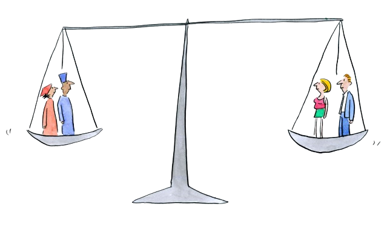

Panti Asuhan Bina Harapan Bogor
Hover me!
Manusia memiliki hak dan martabat yang setara. Kita semua dilahirkan sama kedudukannya dengan orang-orang lain. Perbedaan-perbedaan yang ada bukanlah menjadi suatu dinding yang memisahkan antara satu orang dengan yang lainnya. Namun, ada kalanya orang-orang terlahir atau mengalami kehidupan yang tidak seberuntung orang-orang lainnya. Di masa modern ini, masih saja sulit bagi mereka untuk diterima secara utuh apa adanya oleh masyarakat luas. Hal ini menyebabkan adanya kesenjangan di antara mereka dengan masyarakat kebanyakan.
Hal ini menimbulkan rasa kemanusiaan pada diri kami untuk membantu meringankan beban mereka yang mengalami pengalaman tersebut, contohnya: anak yatim piatu, orang tua yang dititipkan di panti jompo, orang-orang berpenyakit jiwa, dan banyak lainnya. Acara Community Service yang diselenggarakan oleh sekolah dan diwajibkan kepada seluruh murid SMAS Pahoa, telah memberikan kesempatan bagi kami untuk membantu mereka yang mengalami kesulitan tersebut.
Melalui Community Service, kami akan memberikan bantuan untuk meringankan beban ekonomi mereka. Kami juga akan menyumbangkan pelayanan berupa jasa dan pekerjaan-pekerjaan yang mampu meringankan beban mereka serta turut membahagiakan hari-hari mereka selama kami di lokasi.